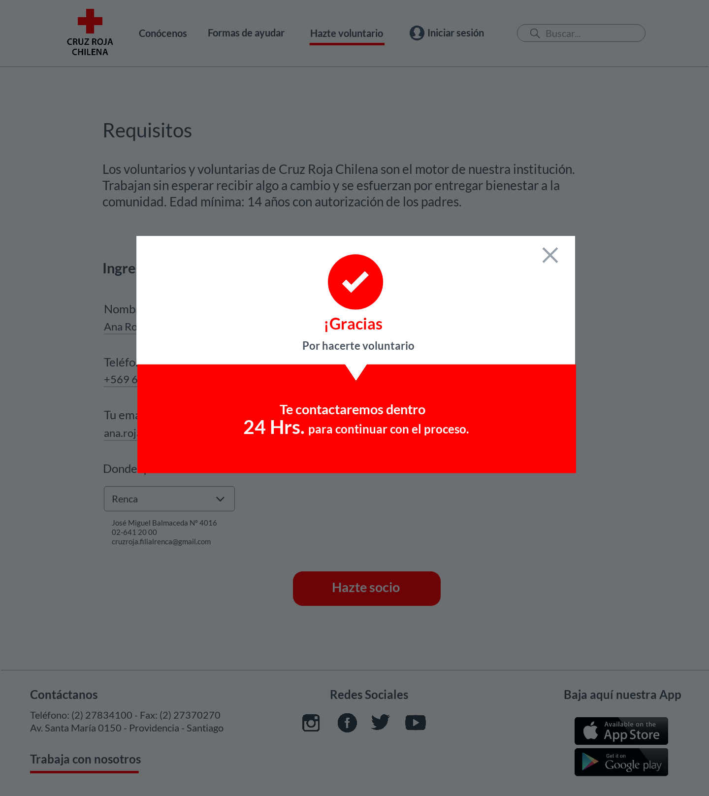
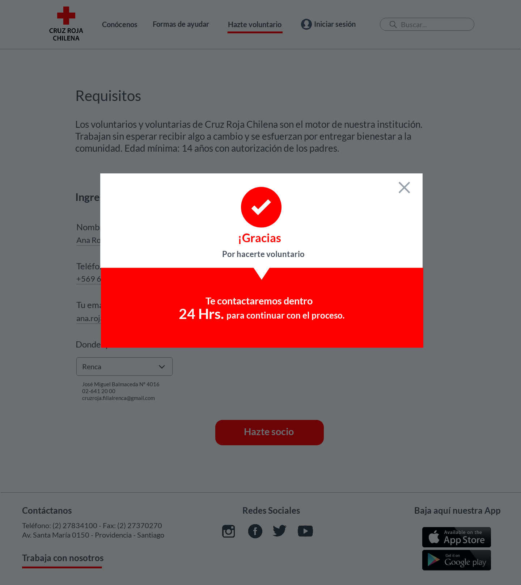

CRUZ ROJA & IBM
HACKATHON LABORATORIA 2018
Se nos solicitó como equipo analizar y rediseñar la página actual de la Cruz Roja con el fin de reducir la cantidad de llamadas que realizan los usuarios a la sucursal con respecto a dudas que deberían ser respondidas en la misma página. Además se solicitó la implementación de un asistente virtual con el fín de resolver dudas que surgen en emergencias.
Para el proceso de investigación trabajamos bajo la metodología de Design Thinking en donde fue fundamental la participación tanto del del cliente como del área de desarrollo.


 
